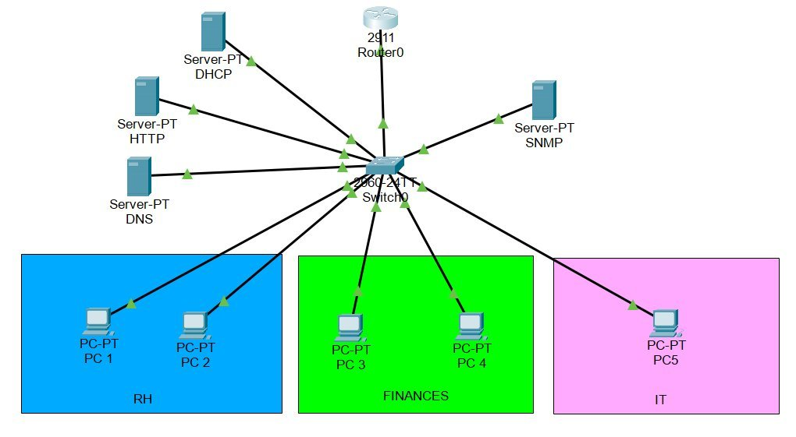
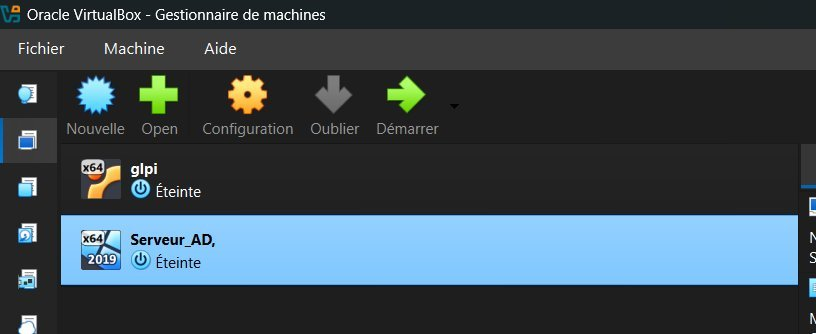
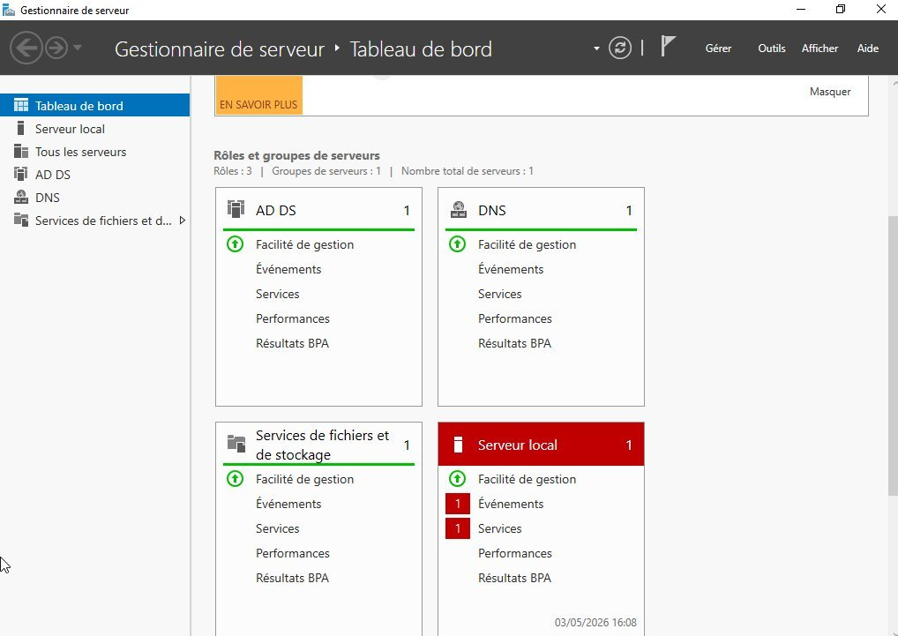
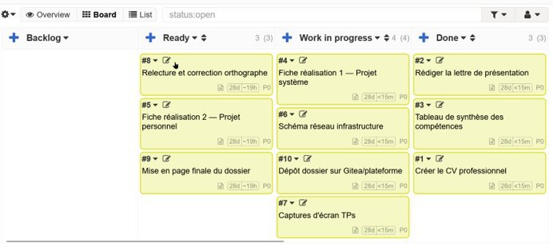
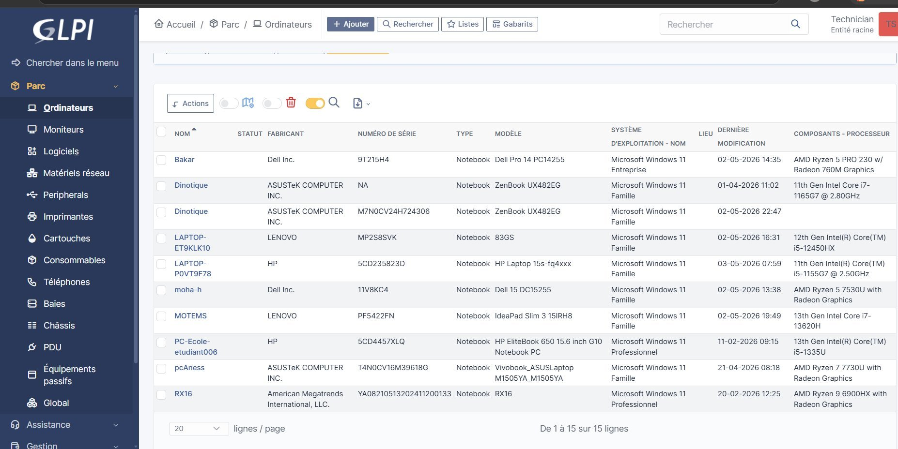
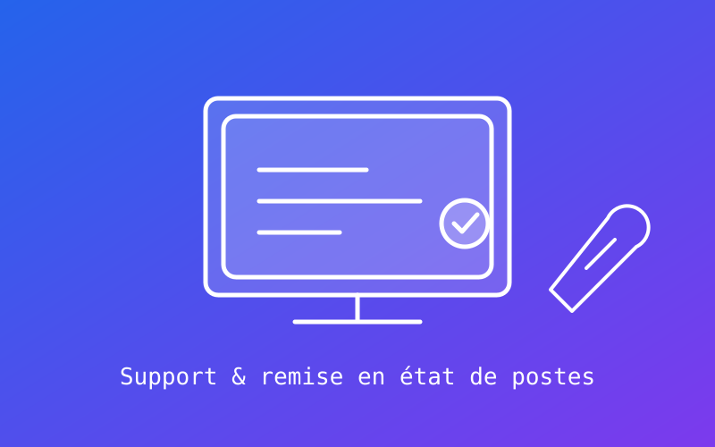
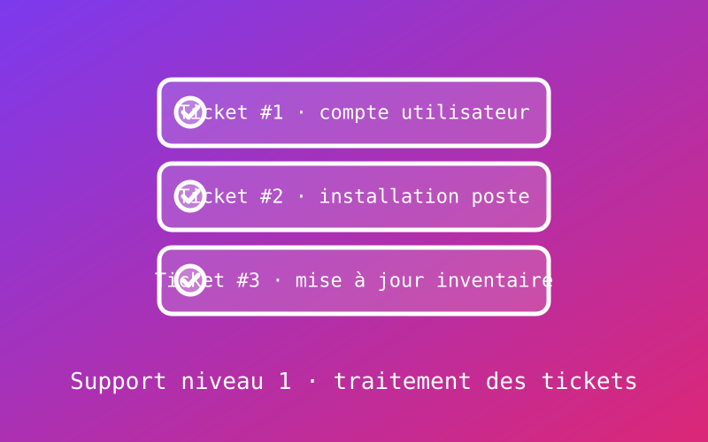
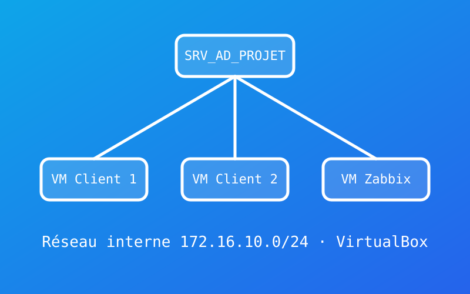
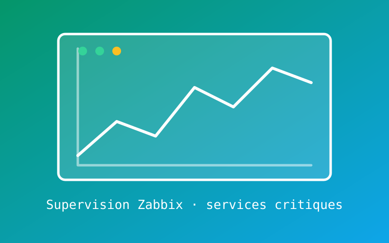

📸 Ajoute img/cisco.jpgBTS SIO · Option SISR · ESUP La Défense
Étudiant en
01 · Compétences
02 · Projets

📸 Ajoute img/cisco.jpgConception d'un réseau complet : switch, routeur, serveurs DHCP / HTTP / DNS / SNMP et segmentation en 3 VLAN (RH, Finances, IT). Adressage IP et tests de connectivité.
Compréhension de la topologie réseau, du rôle des équipements actifs et du diagnostic de connectivité.

📸 Ajoute img/virtualbox.jpgCréation de VM (GLPI sous Ubuntu, Windows Server 2019) avec réglage des ressources, du réseau et des snapshots.
Maîtrise de la virtualisation pour isoler des environnements de test.

📸 Ajoute img/winserver.jpgDéploiement de Windows Server 2019, installation et configuration des rôles AD DS, DNS et services de fichiers.
Gestion centralisée des identités et des accès, résolution de noms interne.

📸 Ajoute img/kanboard.jpgOrganisation des tâches du BTS en Kanban (Backlog, Ready, Work in progress, Done) avec priorités et suivi.
Méthode agile : planifier, prioriser, visualiser l'avancement.

📸 Ajoute img/glpi.jpgDéploiement de GLPI sur VM Ubuntu, inventaire des ordinateurs, gestion des tickets d'assistance.
Outil ITSM utilisé en entreprise ; lien direct avec le terrain rencontré en stage.

📸 Ajoute img/figaro.svgInterventions terrain avec les techniciens, assistance utilisateurs, remise en état de postes, masters PC, tickets GLPI.
Découverte d'une DSI réelle et de l'importance de la sécurité.

📸 Ajoute img/havas.svgTraitement de tickets utilisateurs, installation et configuration de postes, mise à jour de l'inventaire du parc.
Rigueur dans le suivi des tickets et autonomie en support de premier niveau.

📸 Ajoute img/e6.svgProjet individuel sous VirtualBox : VM sur un réseau interne (172.16.10.0/24), annuaire Windows Server / Active Directory (SRV_AD_PROJET), services réseau de niveau 1+2.
Conduite d'un projet de bout en bout : conception, déploiement, documentation.

📸 Ajoute img/zabbix.svgVM Ubuntu Server dédiée à Zabbix ; l'agent du contrôleur de domaine remonte ses données, puis surveillance des services critiques et simulation de pannes.
Supervision proactive d'une infrastructure et réaction aux incidents.
03 · Parcours
04 · Veille technologique
05 · Épreuve E4
Candidat : Tristan SOBEL · Option SISR · Portfolio : https://tristan-03.github.io/portfolio/
| Réalisations | Période | Gérer le patrimoine | Incidents & demandes | Présence en ligne | Mode projet | Mise à dispo. d'un service | Dév. professionnel |
|---|---|---|---|---|---|---|---|
| Réalisation en cours de formation | |||||||
| Réalisation d'un site Web via le Portfolio (https://tristan-03.github.io/portfolio/) | 08/12/2025 à aujourd'hui | ✓ | |||||
| Installation de machines virtuelles sous VirtualBox | 12/10/2025 au 12/10/2025 | ||||||
| Installation de Window Server 2019 sur VirtualBox | 09/03/2026 au 10/03/2026 | ✓ | |||||
| Installation et configuration des rôles AD DS et DNS sur Window Server 2019 | 15/03/2026 au 16/03/2026 | ✓ | ✓ | ✓ | |||
| Déploiement et configuration d’un outil de gestion de parc et de support (GLPI) via VirtualBox sur Ubuntu | 17/11/2025 au 02/03/2026 | ✓ | ✓ | ✓ | ✓ | ||
| Prise en main et utilisation d’un outil de gestion de projet (Kanboard) | 15/12/2025 au 12/01/2026 | ✓ | ✓ | ✓ | |||
| Mise en place et configuration de réseaux locaux virtuels (VLAN) | 09/12/2025 au 10/02/2026 | ✓ | ✓ | ✓ | |||
| Certification Cisco Packet Tracer | 18/11/2025 au 02/12/2025 | ✓ | |||||
| Conception et déploiement d'une salle de formation virtuelle (VirtualBox, Windows Server / Active Directory) | 10/9/2026 au 3/11/2026 | ✓ | ✓ | ||||
| Mise en place de la supervision de l'infrastructure (Zabbix sur Ubuntu Server) | 23/10/2026 au 1/11/2026 | ✓ | ✓ | ||||
| Réalisations en milieu professionnel en cours de première année | |||||||
| Intervention sur site, via un ticket sur GLPI | 16/02/2026 au 27/02/2026 | ✓ | |||||
| Installation et configuration des PC utilisateurs | 16/02/2026 au 27/02/2026 | ✓ | ✓ | ✓ | |||
| Gestion et mise à jour de l’inventaire du parc informatique | 16/02/2026 au 27/02/2026 | ✓ | ✓ | ✓ | |||
| Traitement de tickets utilisateurs au support niveau 1 (Havas, Puteaux) | 15/06/2026 au 27/07/2026 | ✓ | |||||
| Installation et configuration des postes utilisateurs (Havas, Puteaux) | 15/06/2026 au 27/07/2026 | ✓ | ✓ | ✓ | |||
| Gestion et mise à jour de l'inventaire du parc informatique (Havas, Puteaux) | 15/06/2026 au 27/07/2026 | ✓ | |||||
| Réalisations en milieu professionnel en cours de seconde année | |||||||
06 · Contact